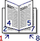
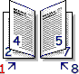

Use the following procedure to print on both sides of sheets using a layout suitable for booklets.
Two formats are available.
Magazine: the whole stack is folded in half in a similar way to a magazine.
Mini Book: each sheet is folded in half separately, and then the folded sheets are stacked and bound.
The pages of your document will be reduced in size and printed side by side, two on each side of each sheet of the original paper size specified in the application. For example, an A4 document will be printed as two A5 images on each side of each A4 sheet. Similarly a Letter size document will be printed as two 5.5" x 8.5" images on each side of each Letter size sheet. The whole stack is folded in half, like a magazine.
If you use the Booklet function and the Layout function together, you will be able to reduce the printing cost.
Depending on the printer you are using, this function may not be available.
Magazine:

Mini Book:
Note:
Depending on the printer you are using, it is required that the duplex unit be installed.
To print at the same as the original without size
reduction, select a paper size that is double that of the original in
the Print On: list on the Basic
menu.
You can also specify it on the Basic menu
of the Detailed Settings tab.
Open the printing preferences dialog box after creating a document in an application.
Click the Frequently Used Settings tab or the 2 Sided/Layout/Booklet menu of the Detailed Settings tab.
Select Magazine or Mini Book in the Booklet: list.
Click the << Collapse list button if the Booklet: list on the Frequently Used Settings tab is not displayed.
Select a page layout in the Page Order: list.
Configure the setting for printing mixed orientation documents and if necessary, select a layout type in the Layout: list, or select the Do not [Fit to Print Size] auto. check box.
If you select Magazine, configure Creep Adjustment... if necessary.
After making any other necessary settings, click OK to close the printing preferences dialog box.
Start printing.